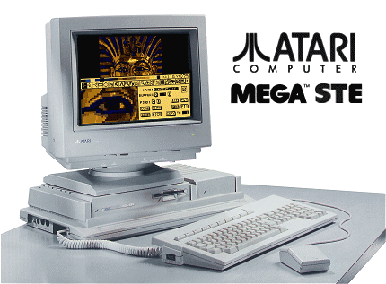

|
Computers
- Main Menu |
Personal Computers :: ST Range ::
Mega STE
::
|
 |
| |
|
1991 -
Atari released the Mega STE as a replacement for the MEGA
range of systems which utilised the previous ST standard
architecture. The Mega STE was announced at the
November 1990 Comdex in Las Vegas, and was a
welcome surprise to many in
attendance. With the STE
architecture announcement a year earlier
and both the 1040STE and 520STE shipping in
quantity since that time, many
observers were expecting a replacement for the MEGA, which
was
the favoured platform for
business and high-end users as apposed to the all-in-one
520 and 1040 units. |
| |
|
Interestingly, Atari decided to use the TT chassis design
for the Mega STE. As the design and tooling were
already completed and FCC certification easier with the
STE components compared to that of its bigger brother, the
Atari TT030, it would also reduce costs to use the same
case. To differentiate the product from the TT, as
they obviously looked alike, the Mega STE would be
coloured with the "ST Grey" scheme, keeping the TT in its
"off-white" clothing. |
| |
|
Of
course, inside there were some major changes from the
stock STE configurations. Of note, the CPU would now
be clock switchable from the standard ST 8MHz design to a
faster 16MHz option. The inclusion of the internal
VME bus and internal HD option would make this the perfect
high-end STE system. The only item missing from the
Mega STE when compared to the all-in-one 520 and 1040
systems was the new Atari 15-Pin Analogue/Digital
controller ports. |
| |
|
 |
|